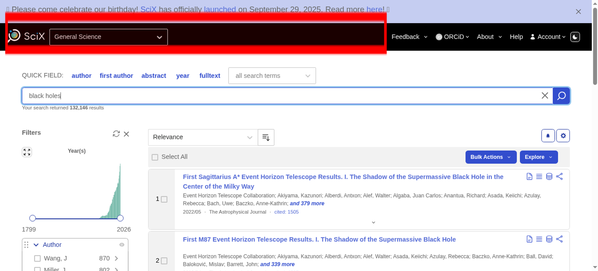

Tested 2025-11-15 02:32:24 using Chrome 141.0.7390.107 (runtime settings).
| Metric | Value |
|---|---|
| Page metrics | |
| Performance score | 67 |
| Total page size | 2.9 MB |
| Requests | 60 |
| Timing metrics | |
| TTFB | 260 ms |
| First Paint | 332 ms |
| Fully Loaded | 6.872 s |
| Google Web Vitals | |
| TTFB | 260 ms |
| First Contentful Paint (FCP) | 332 ms |
| Largest Contentful Paint (LCP) | 1.320 s |
| Cumulative Layout Shift (CLS) | 0.26 |
| Total Blocking Time | 238 ms |
| Max Potential FID | 197 ms |
| CPU metrics | |
| CPU long tasks | 6 |
| CPU last long task happens at | 1.455 s |
| Visual Metrics | |
| First Visual Change | 333 ms |
| Speed Index | 990 ms |
| Visual Complete 85% | 1.466 s |
| Visual Complete 99% | 2.633 s |
| Last Visual Change | 3.666 s |
Choose HAR:
Use--filmstrip.showAll to show all filmstrips.
 0 s
0 sThe coach helps you find performance problems on your web page using web performance best practice rules. And gives you advice on privacy and best practices. Tested using Coach-core version 8.1.3.

| Title | Advice | Score | |||||||||||||||
|---|---|---|---|---|---|---|---|---|---|---|---|---|---|---|---|---|---|
| Avoid using Google Tag Manager. (googleTagManager) | The page is using Google Tag Manager, this is a performance risk since non-tech users can add JavaScript to your page. | 0 | |||||||||||||||
| Description: Google Tag Manager makes it possible for non tech users to add scripts to your page that will downgrade performance. | |||||||||||||||||
| Inline CSS for faster first render (inlineCss) | The page has both inline CSS and CSS requests even though it uses a HTTP/2-ish connection. If you have many users on slow connections, it can be better to only inline the CSS. Run your own tests and check the waterfall graph to see what happens. | 95 | |||||||||||||||
| Description: In the early days of the Internet, inlining CSS was one of the ugliest things you can do. That has changed if you want your page to start rendering fast for your user. Always inline the critical CSS when you use HTTP/1 and HTTP/2 (avoid doing CSS requests that block rendering) and lazy load and cache the rest of the CSS. It is a little more complicated when using HTTP/2. Does your server support HTTP push? Then maybe that can help. Do you have a lot of users on a slow connection and are serving large chunks of HTML? Then it could be better to use the inline technique, becasue some servers always prioritize HTML content over CSS so the user needs to download the HTML first, before the CSS is downloaded. | |||||||||||||||||
| Avoid CPU Long Tasks (longTasks) | The page has 6 CPU long tasks with the total of 538 ms. The total blocking time is 238 ms . However the CPU Long Task is depending on the computer/phones actual CPU speed, so you should measure this on the same type of the device that your user is using. Use Geckoprofiler for Firefox or Chromes tracelog to debug your long tasks. | 0 | |||||||||||||||
| Description: Long CPU tasks locks the thread. To the user this is commonly visible as a "locked up" page where the browser is unable to respond to user input; this is a major source of bad user experience on the web today. However the CPU Long Task is depending on the computer/phones actual CPU speed, so you should measure this on the same type of the device that your user is using. To debug you should use the Chrome timeline log and drag/drop it into devtools or use Firefox Geckoprofiler. | |||||||||||||||||
| Offenders: | |||||||||||||||||
| Avoid Frontend single point of failures (spof) | The page has 2 requests inside of the head that can cause a SPOF (single point of failure). Load them asynchronously or move them outside of the document head. | 80 | |||||||||||||||
| Description: A page can be stopped from loading in the browser if a single JavaScript, CSS, and in some cases a font, couldn't be fetched or is loading really slowly (the white screen of death). That is a scenario you really want to avoid. Never load 3rd-party components synchronously inside of the head tag. | |||||||||||||||||
| Offenders: | |||||||||||||||||
| Avoid extra requests by setting cache headers (cacheHeaders) | The page has 12 requests that are missing a cache time. Configure a cache time so the browser doesn't need to download them every time. It will save 184.6 kB the next access. | 0 | |||||||||||||||
| Description: The easiest way to make your page fast is to avoid doing requests to the server. Setting a cache header on your server response will tell the browser that it doesn't need to download the asset again during the configured cache time! Always try to set a cache time if the content doesn't change for every request. | |||||||||||||||||
| Offenders: | |||||||||||||||||
| Long cache headers is good (cacheHeadersLong) | The page has 4 requests that have a shorter cache time than 30 days (but still a cache time). | 96 | |||||||||||||||
| Description: Setting a cache header is good. Setting a long cache header (at least 30 days) is even better beacause then it will stay long in the browser cache. But what do you do if that asset change? Rename it and the browser will pick up the new version. | |||||||||||||||||
| Offenders: | |||||||||||||||||
| Always compress text content (compressAssets) | The page has 4 requests that are served uncompressed. You could save a lot of bytes by sending them compressed instead. | 60 | |||||||||||||||
| Description: In the early days of the Internet there were browsers that didn't support compressing (gzipping) text content. They do now. Make sure you compress HTML, JSON, JavaScript, CSS and SVG. It will save bytes for the user; making the page load faster and use less bandwith. | |||||||||||||||||
Offenders:
| |||||||||||||||||
| Avoid too many fonts (fewFonts) | The page has 2 font requests. Do you really need them? What value does the fonts give the user? | 80 | |||||||||||||||
| Description: How many fonts do you need on a page for the user to get the message? Fonts can slow down the rendering of content, try to avoid loading too many of them because worst case it can make the text invisible until they are loaded (FOIT—flash of invisible text), best case they will flicker the text content when they arrive. | |||||||||||||||||
| Offenders: | |||||||||||||||||
| Total JavaScript size shouldn't be too big (javascriptSize) | The total JavaScript transfer size is 2.8 MB and the uncompressed size is 6.8 MB. This is totally crazy! There is really room for improvement here. | 0 | |||||||||||||||
| Description: A lot of JavaScript often means you are downloading more than you need. How complex is the page and what can the user do on the page? Do you use multiple JavaScript frameworks? | |||||||||||||||||
| Offenders: | |||||||||||||||||
| Avoid using incorrect mime types (mimeTypes) | The page has 2 misconfigured mime types. | 98 | |||||||||||||||
| Description: It's not a great idea to let browsers guess content types (content sniffing), in some cases it can actually be a security risk. | |||||||||||||||||
| Offenders: | |||||||||||||||||
| Make each CSS response small (optimalCssSize) | https://www.gstatic.com/recaptcha/releases/TkacYOdEJbdB_JjX802TMer9/styles__ltr.css size is 43.1 kB (43079) and that is bigger than the limit of 14.5 kB. Try to make the CSS files fit into 14.5 KB. | 90 | |||||||||||||||
| Description: Make CSS responses small to fit into the magic number TCP window size of 14.5 KB. The browser can then download the CSS faster and that will make the page start rendering earlier. | |||||||||||||||||
Offenders:
| |||||||||||||||||
| Total page size shouldn't be too big (pageSize) | The page total transfer size is 3.1 MB, which is more than the coach limit of 2 MB. That is really big and you need to make it smaller. | 0 | |||||||||||||||
| Description: Avoid having pages that have a transfer size over the wire of more than 2 MB (desktop) and 1 MB (mobile) because that is really big and will hurt performance and will make the page expensive for the user if she/he pays for the bandwidth. | |||||||||||||||||
| Offenders: | |||||||||||||||||
| Don't use private headers on static content (privateAssets) | The page has 4 requests with private headers. The main page has a private header. It could be right in some cases where the user can be logged in and served specific content. But if your asset is static it should never be private. Make sure that the assets really should be private and only used by one user. Otherwise, make it cacheable for everyone. | 70 | |||||||||||||||
| Description: If you set private headers on content, that means that the content are specific for that user. Static content should be able to be cached and used by everyone. Avoid setting the cache header to private. | |||||||||||||||||
| Offenders: | |||||||||||||||||
| Title | Advice | Score |
|---|---|---|
| Cumulative Layout Shift (cumulativeLayoutShift) | You have a poor cumulative layout shift score (0.2621). It is in the Google Web Vitals poor range, with a shift higher than 0.25. You should manually check the filmstrip or video and check if it will affect the user. | 0 |
| Description: Cumulative Layout Shift measures the sum total of all individual layout shift scores for unexpected layout shift that occur. The metric is measuring visual stability by quantify how often users experience unexpected layout shifts. It is one of Google Web Vitals. | ||
| Have a good URL format (url) | The page is using more than two request parameters. You should really rethink and try to minimize the number of parameters. | 50 |
| Description: A clean URL is good for the user and for SEO. Make them human readable, avoid too long URLs, spaces in the URL, too many request parameters, and never ever have the session id in your URL. | ||
| Do not send too long headers (longHeaders) | https://scixplorer.o...plorer.org/search has a header content-security-policy that is 1479 characters long. https://scixplorer.o...plorer.org/search has a header set-cookie that is 980 characters long. https://scixplorer.o...186fbf45e6562.css has a header content-security-policy that is 1479 characters long. https://scixplorer.o...f9a0935ecd3373.js has a header content-security-policy that is 1479 characters long. https://scixplorer.o...19d71d5fcb51d8.js has a header content-security-policy that is 1479 characters long. https://scixplorer.o...1fe989de45a1eb.js has a header content-security-policy that is 1479 characters long. https://scixplorer.o...8d749f89601d32.js has a header content-security-policy that is 1479 characters long. https://scixplorer.o...e46dbe224dea2a.js has a header content-security-policy that is 1479 characters long. https://scixplorer.o...cf572b8432ebdd.js has a header content-security-policy that is 1479 characters long. https://scixplorer.o...31eb38ede7869a.js has a header content-security-policy that is 1479 characters long. https://scixplorer.o...40c52b9df40f95.js has a header content-security-policy that is 1479 characters long. https://scixplorer.o...f0a0ce31f22153.js has a header content-security-policy that is 1479 characters long. https://scixplorer.o...3e9d6eee7d95d3.js has a header content-security-policy that is 1479 characters long. https://scixplorer.o...302dd67457ba22.js has a header content-security-policy that is 1479 characters long. https://scixplorer.o...5105df4e2b871b.js has a header content-security-policy that is 1479 characters long. https://scixplorer.o...b5187f99fecc28.js has a header content-security-policy that is 1479 characters long. https://scixplorer.o...d5c0d846f8b9ee.js has a header content-security-policy that is 1479 characters long. https://scixplorer.o...34d0e9adacd370.js has a header content-security-policy that is 1479 characters long. https://scixplorer.o...9a2b0e46c0c8d0.js has a header content-security-policy that is 1479 characters long. https://scixplorer.o...1d4d095d391097.js has a header content-security-policy that is 1479 characters long. https://scixplorer.o...f64c654f8a50eb.js has a header content-security-policy that is 1479 characters long. https://scixplorer.o...f08710d2220d2c.js has a header content-security-policy that is 1479 characters long. https://scixplorer.o...ddf10d1da2e7c3.js has a header content-security-policy that is 1479 characters long. https://scixplorer.o...3bd8ff03595cbd.js has a header content-security-policy that is 1479 characters long. https://scixplorer.o..._buildManifest.js has a header content-security-policy that is 1479 characters long. https://scixplorer.o...0/_ssgManifest.js has a header content-security-policy that is 1479 characters long. https://scixplorer.org/api/monitor has a header content-security-policy that is 1479 characters long. https://scixplorer.o...ef8333689c9af1.js has a header content-security-policy that is 1479 characters long. https://scixplorer.o...c376ac64726bfe.js has a header content-security-policy that is 1479 characters long. https://scixplorer.o...f58860eaab7b28.js has a header content-security-policy that is 1479 characters long. https://scixplorer.o...ee94d44f5d9ebc.js has a header content-security-policy that is 1479 characters long. https://scixplorer.org/api/user has a header content-security-policy that is 1479 characters long. https://scixplorer.org/api/user has a header set-cookie that is 982 characters long. https://scixplorer.org/api/user has a header content-security-policy that is 1479 characters long. https://scixplorer.org/api/user has a header content-security-policy that is 1479 characters long. https://scixplorer.o...18e30380bc2ff6.js has a header content-security-policy that is 1479 characters long. https://scixplorer.o...9169de4515c2bd.js has a header content-security-policy that is 1479 characters long. https://scixplorer.o.../site.webmanifest has a header content-security-policy that is 1479 characters long. https://scixplorer.o...favicon-32x32.png has a header content-security-policy that is 1479 characters long. | 61 |
| Description: Do not send response headers that are too long. | ||
| Offenders: | ||
| Avoid too many third party requests (thirdParty) | The page do 27% requests to third party domains (16 requests and 1.8 MB). First party is 44 requests and 1.3 MB. The page transfer more bytes from third party domains (1.8 MB) then first party (1.3 MB). The regex .*scixplorer.* was used to calculate first/third party requests. | 0 |
| Description: Do not load most of your content from third party URLs. | ||
| Avoid unnecessary headers (unnecessaryHeaders) | There are 16 responses that sets both a max-age and expires header. There are 5 responses that sets a pragma no-cache header (that is a request header). There are 16 responses that sets a server header. | 63 |
| Description: Do not send headers that you don't need. We look for p3p, cache-control and max-age, pragma, server and x-frame-options headers. Have a look at Andrew Betts - Headers for Hackers talk as a guide https://www.youtube.com/watch?v=k92ZbrY815c or read https://www.fastly.com/blog/headers-we-dont-want. | ||
| Offenders: | ||
| Page info | |
|---|---|
| Title | black holes - Science Explorer Search |
| Width | 1350 |
| Height | 2061 |
| DOM elements | 2067 |
| Avg DOM depth | 15 |
| Max DOM depth | 23 |
| Iframes | 2 |
| Script tags | 33 |
| Local storage | 1.1 KB |
| Session storage | 146 B |
| Network Information API | 4g |
Data collected using Wappalyzer version 6.10.54. With updated code from Webappanalyzer 2024-12-27. Use --browsertime.firefox.includeResponseBodies htmlor --browsertime.chrome.includeResponseBodies htmlto help Wappalyzer find more information about technologies used.
| Technology | Confidence | Category |
|---|---|---|
| reCAPTCHA | 100 | Security |
| HSTS | 100 | Security |
| Cloudflare | 100 | CDN |
| HTTP/3 | 100 | Miscellaneous |
Data collected using Third Party Web 0.26.2
| Cdn |
|---|
| Cloudflare CDN |
| Google CDN |
| Google Fonts |
| Tag-manager |
| Google Tag Manager |
| Survelliance |
| Google Tag Manager |
| Other Google APIs/SDKs |
| Google CDN |
| Google Analytics |
| Google Fonts |
| Utility |
| Other Google APIs/SDKs |
| Analytics |
| Google Analytics |
| Visual Metrics | |
|---|---|
| First Visual Change | 333 ms |
| Speed Index | 990 ms |
| Visual Complete 85% | 1.466 s |
| Visual Complete 95% | 1.566 s |
| Visual Complete 99% | 2.633 s |
| Last Visual Change | 3.666 s |
| Visual Readiness | 3.333 s |
| Navigation Timing | |
|---|---|
| backEndTime | 260 ms |
| domContentLoadedTime | 711 ms |
| domInteractiveTime | 292 ms |
| domainLookupTime | 29 ms |
| frontEndTime | 1.584 s |
| pageDownloadTime | 3 ms |
| pageLoadTime | 1.846 s |
| redirectionTime | 0 ms |
| serverConnectionTime | 34 ms |
| serverResponseTime | 196 ms |
| Google Web Vitals | |
|---|---|
| Time to first byte (TTFB) | 260 ms |
| First Contentful Paint (FCP) | 332 ms |
| Largest Contentful Paint (LCP) | 1.320 s |
| Cumulative Layout Shift (CLS) | 0.26 |
| Total Blocking Time (TBT) | 238 ms |
| Extra timings | |
|---|---|
| TTFB | 260 ms |
| First Paint | 332 ms |
| Load Event End | 1.846 s |
| Fully loaded | 6.872 s |
| User Timing marks | |
|---|---|
| sentry-tracing-init | 568 ms |
| mark_feature_usage | 787 ms |
| User Timing measures | ||
|---|---|---|
| Name | Start time | Duration |
| Next.js-before-hydration | 0 ms | 710 ms |
| Next.js-hydration | 710 ms | 65 ms |
When in time the page main content is rendered (collected using the Largest Contentful Paint API). Read more about Largest Contentful Paint.
| Element type | P |
| Element/tag | <p style="font-size: 1.25em;"></p> |
| Render time | 1.320 s |
| Element render delay | 1.060 s |
| TTFB | 260 ms |
| Resource delay | 0 ms |
| Resource load duration | 0 ms |
| Load time | 0 ms |
| Size (width*height) | 17500 |
| DOM path | |
| div#__next > div > div > div > div > p> div#__next > div > div > div > div > p> | |

The largest contentful paint is highlighted in the image. If no element is highlighted the element was removed before the screenshot or the LCP API couldn't find the element.
0.26210 cumulative layout shift collected from the Cumulative Layout Shift API.
These HTML elements contribute most to the Cumulative Layout Shifts of the page. The higher score, the more layout shift.
| Score | HTML Element |
|---|---|
| 0.00237 | <svg class="histogram-svg" width="200" height="125"></svg>,<div aria-label="histogram slider" class="css-1g5pm5m"></div>,<div class="chakra-stack css-ktsl3a" style="left: calc(0% - 0.5em);"></div>,<div class="chakra-stack css-10f420n" style="left: calc(100% + 0.5em);"></div> |
| body > div#__next > div > main > div#main-content > div > div > div:eq(1) > aside > section > div:eq(1) > div > div > svg,body > div#__next > div > main > div#main-content > div > div > div:eq(1) > aside > section > div:eq(1) > div > div > div,body > div#__next > div > main > div#main-content > div > div > div:eq(1) > aside > section > div:eq(1) > div > div > div > div > div:eq(1) > div:eq(0),body > div#__next > div > main > div#main-content > div > div > div:eq(1) > aside > section > div:eq(1) > div > div > div > div > div:eq(1) > div:eq(1) | |
| 0.00041 | <ul role="list" class="css-16gqjil"></ul>,<button type="button" class="chakra-button css-1g6gszj" role="button" tabindex="0" aria-disabled="false" aria-roledescription="sortable" aria-describedby="DndDescribedBy-0"></button>,<button type="button" class="chakra-button css-1vv3i83" aria-label="Hide Author filter"></button>,<button type="button" class="chakra-button css-1g6gszj" role="button" tabindex="0" aria-disabled="false" aria-roledescription="sortable" aria-describedby="DndDescribedBy-0"></button> |
| body > div#__next > div > main > div#main-content > div > div > div:eq(1) > aside > ul,body > div#__next > div > main > div#main-content > div > div > div:eq(1) > aside > ul > li:eq(0) > h3 > div > button:eq(0),body > div#__next > div > main > div#main-content > div > div > div:eq(1) > aside > ul > li:eq(0) > h3 > div > button:eq(1),body > div#__next > div > main > div#main-content > div > div > div:eq(1) > aside > ul > li:eq(1) > h3 > div > button:eq(0) | |

The elements that have shifted place is highlighted in the image (that have a higher value than 0.01). If the element shifted outside of the viewport, you will not see it there. It can be hard to understand what content that has shifted, if that's the case, checkout the video or the filmstrip of the run.
Read more about the Long Animation Frames API here here.
The top 10 longest animation frames entries
| Blocking duration | Work duration | Render duration | PreLayout Duration | Style And Layout Duration |
|---|---|---|---|---|
| 148 ms | 211.3 ms | 0.9 ms | 0.8 ms | 0.1 ms |
| https://scixplorer.org/_next/static/chunks/pages/_app-df8d749f89601d32.js | ||||
Forced Style And Layout Duration: 3 ms Invoker: https://scixplorer.org/_next/static/chunks/pages/_app-df8d749f89601d32.js | ||||
| https://scixplorer.org/_next/static/chunks/pages/search-293bd8ff03595cbd.js | ||||
Invoker: https://scixplorer.org/_next/static/chunks/pages/search-293bd8ff03595cbd.js | ||||
| Blocking duration | Work duration | Render duration | PreLayout Duration | Style And Layout Duration |
|---|---|---|---|---|
| 32.6 ms | 84.7 ms | 0.4 ms | 0.4 ms | 0 ms |
| https://scixplorer.org/_next/static/chunks/framework-2b19d71d5fcb51d8.js | ||||
Forced Style And Layout Duration: 5 ms Invoker: MessagePort.onmessage | ||||
| Blocking duration | Work duration | Render duration | PreLayout Duration | Style And Layout Duration |
|---|---|---|---|---|
| 31.8 ms | 91.5 ms | 0.9 ms | 0.9 ms | 0 ms |
| https://scixplorer.org/_next/static/chunks/framework-2b19d71d5fcb51d8.js | ||||
Forced Style And Layout Duration: 5 ms Invoker: MessagePort.onmessage | ||||
| Blocking duration | Work duration | Render duration | PreLayout Duration | Style And Layout Duration |
|---|---|---|---|---|
| 20 ms | 83.3 ms | 1.1 ms | 1.1 ms | 0 ms |
| https://scixplorer.org/_next/static/chunks/pages/_app-df8d749f89601d32.js | ||||
Forced Style And Layout Duration: 15 ms Invoker: TimerHandler:setTimeout | ||||
| Blocking duration | Work duration | Render duration | PreLayout Duration | Style And Layout Duration |
|---|---|---|---|---|
| 8.6 ms | 65.8 ms | 0.2 ms | 0 ms | 0.2 ms |
| https://cdnjs.cloudflare.com/ajax/libs/mathjax/3.2.2/es5/tex-mml-chtml.js | ||||
Invoker: https://cdnjs.cloudflare.com/ajax/libs/mathjax/3.2.2/es5/tex-mml-chtml.js | ||||
| Blocking duration | Work duration | Render duration | PreLayout Duration | Style And Layout Duration |
|---|---|---|---|---|
| 2.2 ms | 50.7 ms | 3.5 ms | 0.4 ms | 3.1 ms |
| https://scixplorer.org/_next/static/chunks/framework-2b19d71d5fcb51d8.js | ||||
Forced Style And Layout Duration: 2 ms Invoker: MessagePort.onmessage | ||||
| Blocking duration | Work duration | Render duration | PreLayout Duration | Style And Layout Duration |
|---|---|---|---|---|
| 1.8 ms | 54.2 ms | 0.4 ms | 0.4 ms | 0 ms |
| https://www.gstatic.com/recaptcha/releases/TkacYOdEJbdB_JjX802TMer9/recaptcha__en.js | ||||
Invoker: https://www.gstatic.com/recaptcha/releases/TkacYOdEJbdB_JjX802TMer9/recaptcha__en.js | ||||
| Blocking duration | Work duration | Render duration | PreLayout Duration | Style And Layout Duration |
|---|---|---|---|---|
| 0 ms | 54.9 ms | 0.2 ms | 0.1 ms | 0.1 ms |
| https://www.googletagmanager.com/gtag/js?id=G-DBP4MPB22J&cx=c>m=4e5bd0h2 | ||||
Invoker: https://www.googletagmanager.com/gtag/js?id=G-DBP4MPB22J&cx=c>m=4e5bd0h2 | ||||
| Blocking duration | Work duration | Render duration | PreLayout Duration | Style And Layout Duration |
|---|---|---|---|---|
| 0 ms | 98 ms | 0.9 ms | 0.9 ms | 0 ms |
| https://scixplorer.org/_next/static/chunks/framework-2b19d71d5fcb51d8.js | ||||
Invoker: MessagePort.onmessage | ||||
| Blocking duration | Work duration | Render duration | PreLayout Duration | Style And Layout Duration |
|---|---|---|---|---|
| 0 ms | 96.6 ms | 3.7 ms | 3.7 ms | 0 ms |
| https://scixplorer.org/_next/static/chunks/9353.2c9169de4515c2bd.js | ||||
Invoker: https://scixplorer.org/_next/static/chunks/9353.2c9169de4515c2bd.js | ||||
| https://scixplorer.org/_next/static/chunks/framework-2b19d71d5fcb51d8.js | ||||
Invoker: MessagePort.onmessage | ||||
There are no Server Timings.
There are no custom configured scripts.
There are no custom extra metrics from scripting.
| name | value |
|---|---|
| AudioHandlers | 0 |
| AudioWorkletProcessors | 0 |
| Documents | 19 |
| Frames | 7 |
| JSEventListeners | 5407 |
| LayoutObjects | 2952 |
| MediaKeySessions | 0 |
| MediaKeys | 0 |
| Nodes | 15840 |
| Resources | 91 |
| ContextLifecycleStateObservers | 43 |
| V8PerContextDatas | 6 |
| WorkerGlobalScopes | 2 |
| UACSSResources | 0 |
| RTCPeerConnections | 0 |
| ResourceFetchers | 21 |
| AdSubframes | 0 |
| DetachedScriptStates | 6 |
| ArrayBufferContents | 537 |
| LayoutCount | 34 |
| RecalcStyleCount | 174 |
| LayoutDuration | 37 |
| RecalcStyleDuration | 107 |
| DevToolsCommandDuration | 4 |
| ScriptDuration | 972 |
| V8CompileDuration | 1 |
| TaskDuration | 1456 |
| TaskOtherDuration | 335 |
| ThreadTime | 1 |
| ProcessTime | 3 |
| JSHeapUsedSize | 53495752 |
| JSHeapTotalSize | 93437952 |
| FirstMeaningfulPaint | 330 |
How the page is built.
| Summary | |
|---|---|
| HTTP version | HTTP/2.0 |
| Total requests | 60 |
| Total domains | 7 |
| Total transfer size | 2.9 MB |
| Total content size | 7.0 MB |
| Responses missing compression | 40 |
| Number of cookies | 9 |
| Third party cookies | 0 |
| Requests per response code | |
|---|---|
| 200 | 56 |
| 204 | 4 |
| Content | Header Size | Transfer Size | Content Size | Requests |
|---|---|---|---|---|
| html | 0 b | 77.9 KB | 197.0 KB | 2 |
| css | 0 b | 44.7 KB | 83.8 KB | 2 |
| javascript | 0 b | 2.6 MB | 6.5 MB | 36 |
| image | 0 b | 5.9 KB | 4.1 KB | 2 |
| font | 0 b | 30.2 KB | 30.2 KB | 2 |
| other | 0 b | 2.0 KB | 276 B | 2 |
| json | 0 b | 130.2 KB | 120.2 KB | 9 |
| plain | 0 b | 3.7 KB | 2.3 KB | 5 |
| Total | 0 b | 2.9 MB | 7.0 MB | 60 |
| Domain | Total download time | Transfer Size | Content Size | Requests |
|---|---|---|---|---|
| scixplorer.org | 9.840 s | 1.2 MB | 3.3 MB | 44 |
| cdnjs.cloudflare.com | 222 ms | 202.0 KB | 1.1 MB | 2 |
| www.googletagmanager.com | 232 ms | 257.9 KB | 759.4 KB | 2 |
| www.google.com | 290 ms | 45.6 KB | 78.8 KB | 2 |
| www.gstatic.com | 540 ms | 1.2 MB | 1.7 MB | 4 |
| www.google-analytics.com | 232 ms | 690 B | 0 b | 4 |
| fonts.gstatic.com | 221 ms | 30.2 KB | 30.2 KB | 2 |
| type | min | median | max |
|---|---|---|---|
| Expires | 0 seconds | 1 year | 1 year |
| Last modified | 2 hours | 1 week | 8 years |
Included requests done after load event end.
| Content | Transfer Size | Requests |
|---|---|---|
| html | 0 b | 0 |
| css | 0 b | 0 |
| javascript | 0 b | 0 |
| image | 3.6 KB | 1 |
| font | 0 b | 0 |
| plain | 77 B | 2 |
| other | 2.0 KB | 1 |
| Total | 5.6 KB | 4 |
Includes requests done after DOM content loaded.
| Content | Transfer Size | Requests |
|---|---|---|
| html | 44.5 KB | 1 |
| css | 42.1 KB | 1 |
| javascript | 1.6 MB | 12 |
| image | 5.9 KB | 2 |
| font | 30.2 KB | 2 |
| json | 130.2 KB | 9 |
| plain | 3.7 KB | 5 |
| other | 2.0 KB | 1 |
| Total | 1.9 MB | 33 |
Third party requests categorised by Third party web version 0.26.2.
| Category | Requests |
|---|---|
| cdn | 8 |
| tag-manager | 2 |
| survelliance | 14 |
| utility | 2 |
| analytics | 4 |
| Category | Number of tools |
|---|---|
| cdn | 3 |
| tag-manager | 1 |
| survelliance | 5 |
| utility | 1 |
| analytics | 1 |
Calculated using .*scixplorer.* (use --firstParty to configure).
| Content | Header Size | Transfer Size | Content Size | Requests |
|---|---|---|---|---|
| html | 0 b | 33.3 KB | 119.8 KB | 1 |
| css | 0 b | 2.7 KB | 2.8 KB | 1 |
| javascript | 0 b | 1.1 MB | 3.1 MB | 29 |
| image | 0 b | 3.6 KB | 1.9 KB | 1 |
| font | 0 b | 0 b | 0 b | 0 |
| other | 0 b | 2.0 KB | 276 B | 2 |
| json | 0 b | 130.2 KB | 120.2 KB | 9 |
| plain | 0 b | 3.1 KB | 2.3 KB | 1 |
| Total | N/A | 1.2 MB | 3.3 MB | 44 |
| Content | Header Size | Transfer Size | Content Size | Requests |
|---|---|---|---|---|
| html | 0 b | 44.5 KB | 77.2 KB | 1 |
| css | 0 b | 42.1 KB | 81.0 KB | 1 |
| javascript | 0 b | 1.6 MB | 3.5 MB | 7 |
| image | 0 b | 2.3 KB | 2.2 KB | 1 |
| font | 0 b | 30.2 KB | 30.2 KB | 2 |
| plain | 0 b | 690 B | 0 b | 4 |
| Total | N/A | 1.7 MB | 3.6 MB | 16 |
afterPageCompleteCheck.png

layoutShift.png
largestContentfulPaint.png
{kind=link}
{kind=link}
{kind=link}
{kind=link}
{kind=link}
{kind=link}
{kind=link}
{kind=link}
{kind=link}
{kind=link}
{kind=link}
{kind=link}
{kind=link}
{kind=link}
{kind=link}
{kind=link}
{kind=link}
{kind=link}
{kind=link}
{kind=link}
{kind=link}
{kind=link}
{kind=link}
{kind=link}
{kind=link}
{kind=link}
{kind=link}
{kind=link}
{kind=link}
{kind=link}
{kind=link}
{kind=link}
{kind=link}
{kind=link}
{kind=link}
{kind=link}
{kind=link}
{kind=link}
{kind=link}
{kind=link}
{kind=link}
{kind=link}
{kind=link}